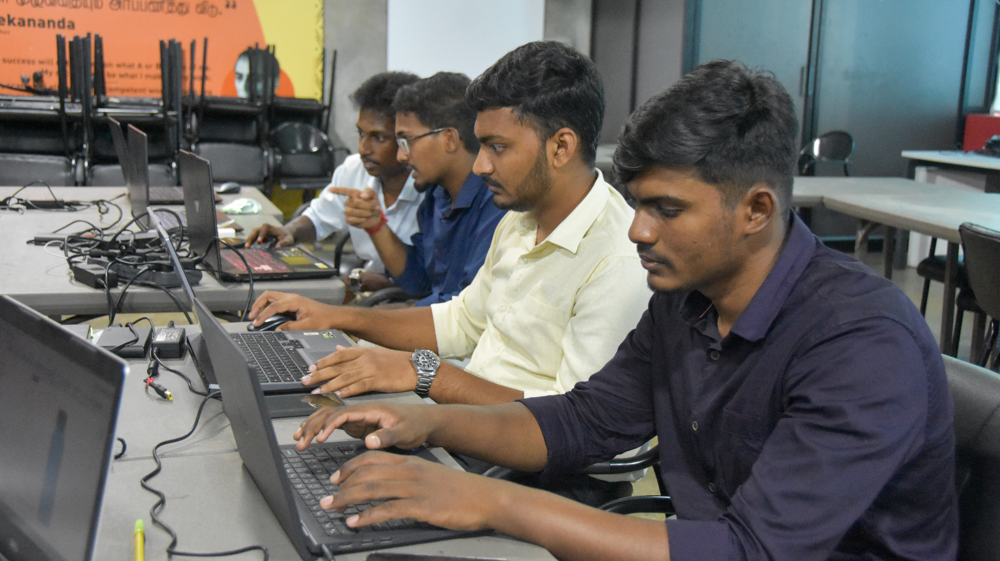
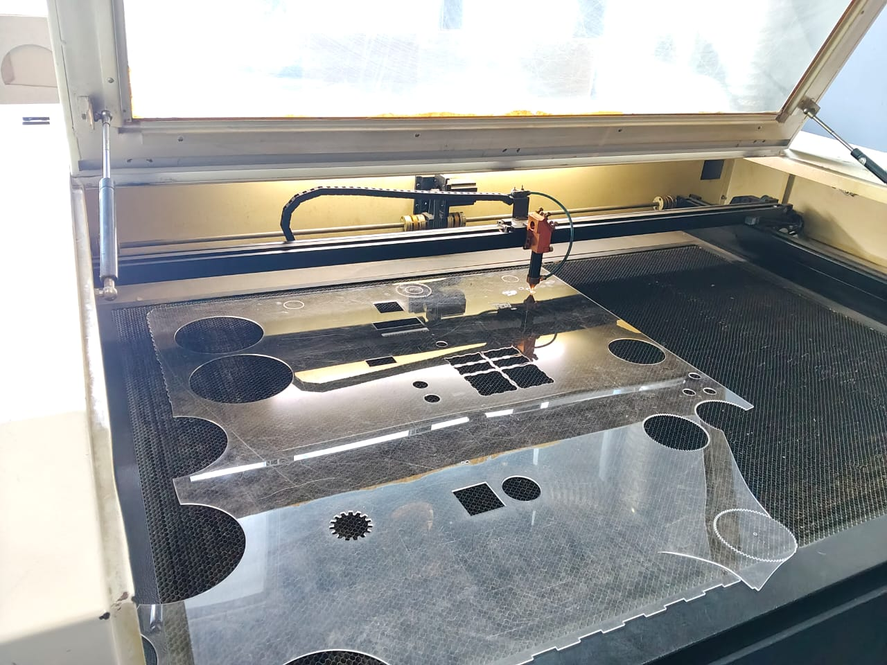
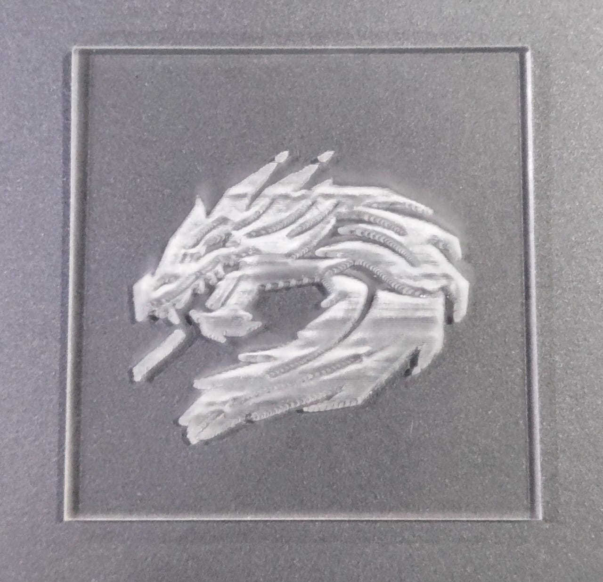

ProtoSem Journal - Week 04
Laser Cutting, 3D Printing and Alpha Team Formation
This week focused on exploring digital fabrication techniques through laser cutting and 3D printing, while also marking an important milestone with the final formation of the Alpha team. The practical sessions helped me understand how digital designs can be converted into physical components and how teamwork supports engineering projects.
What I learned
- Understood the basic working principles and applications of laser cutting and 3D printing.
- Learned how digital designs can be prepared and converted into suitable formats for fabrication.
- Gained practical experience with machine settings, material selection, accuracy, and fabrication tolerances.
- Completed the final Alpha team formation for upcoming collaborative projects.
- Connected design, fabrication, and teamwork in practical engineering.
Big takeaway
Digital fabrication creates a direct connection between CAD design and real-world manufacturing. Successful projects also depend on communication, responsibility, and collaboration.
Week 4 in pictures



Learning reflection
Laser cutting
During the laser cutting session, I learned how a digital design is prepared for fabrication and converted into a physical part. I gained a better understanding of how power, speed, focus, kerf, material thickness, and design dimensions can affect the final output.
3D printing
The 3D printing activity introduced me to another important digital manufacturing method. I learned how a 3D CAD model can be converted into printable layers and produced as a physical object while considering print orientation, layer settings, supports, and material selection.
Alpha team formation
The final formation of the Alpha team provided a foundation for upcoming projects. Working as part of a team requires communication, coordination, responsibility, and the ability to contribute individual skills toward a common objective.
Final reflection: Week 4 combined digital fabrication, practical manufacturing, and teamwork. Laser cutting and 3D printing showed me how CAD designs become real-world components, while the Alpha team formation strengthened my readiness for collaborative engineering projects.